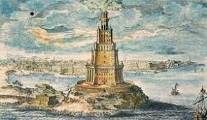
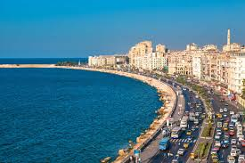
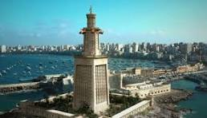
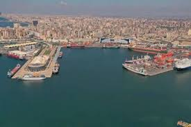
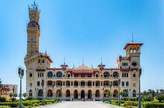
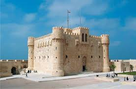

Fondée en -331 av. J.-C. par Alexandre le Grand, Alexandrie fut conçue comme un pont entre la Grèce et
l’Égypte. Très vite, elle devint un centre intellectuel et commercial majeur du monde antique. La ville
accueillait la célèbre Bibliothèque d’Alexandrie et le Musée, hauts lieux du savoir et de la
philosophie. À son apogée, Alexandrie était la plus grande métropole du bassin méditerranéen, réputée
pour son ouverture, sa diversité et sa richesse culturelle.
Au fil des siècles, la ville connut des périodes de déclin et de renaissance, notamment sous l’Empire
romain, puis ottoman, avant de devenir un port cosmopolite durant le XIXe et le XXe siècle, symbole de
modernité et de mélange des cultures.

Alexandrie aujourd'hui
Les dates importante
-331 av. J.-C.
Fondation de la ville par Alexandre le Grand.
IIIe siècle av. J.-C.
Construction du Phare d’Alexandrie, l’une des Sept Merveilles du Monde antique.
48 av.
Incendie de la Bibliothèque d’Alexandrie lors de la guerre entre César et Pompée.
641 apr. J.-C.
Conquête arabe, marquant un tournant culturel et religieux majeur.
1798
Campagne d’Égypte menée par Napoléon Bonaparte.
1952
Révolution égyptienne — Alexandrie devient un pôle industriel et portuaire moderne.
L’Alexandrie moderne et sa population

Le Nouveau Alexandrie
Aujourd’hui, Alexandrie est la deuxième plus grande ville d’Égypte, avec une population dépassant les 5
millions d’habitants. Son port, le plus grand du pays, joue un rôle crucial dans le commerce
méditerranéen. La ville conserve un charme unique, entre héritage antique, influences coloniales et
modernité égyptienne. On y trouve une population cosmopolite, issue de diverses origines arabes,
grecques, arméniennes et italiennes, reflet de son histoire ouverte sur le monde.
Le Phare d'Alexandrie

Phare d'Alexandrie
Érigé sur l’île de Pharos au IIIe siècle av. J.-C. sous le règne de Ptolémée II Philadelphe, le
Phare d’Alexandrie atteignait près de 120 mètres de haut. Construit par l’architecte Sostrate de
Cnide, il guidait les marins entrant dans le port grâce à un feu visible à plusieurs kilomètres.
Considéré comme un chef-d’œuvre d’ingénierie antique, il fut détruit par plusieurs tremblements de
terre entre le XIVe et le XVe siècle. Aujourd’hui, ses vestiges reposent sous la mer, au large de la
citadelle de Qaitbay, bâtie à son emplacement au XVe siècle.
Le Port d'Alexandrie

Port d'Alexandrie
Le Port d’Alexandrie est depuis l’Antiquité la porte maritime de l’Égypte sur la Méditerranée. Il se
divise aujourd’hui en deux zones principales : le port oriental, plus ancien, et le port occidental,
moderne et industriel. Ce dernier gère la majorité du trafic maritime égyptien. Autrefois point de
départ des navires grecs et romains, le port reste un symbole du dynamisme économique et commercial
de la ville.
Le Musée national d’Alexandrie
Musée National d'Alexandrie
Installé dans un ancien palais de style italien, le Musée national d’Alexandrie retrace l’évolution de
la ville à travers plus de 1 800 objets archéologiques. On y découvre des trésors issus des époques
pharaonique, grecque, romaine, copte et islamique. Certaines pièces proviennent même des fouilles
sous-marines du port, témoignant du glorieux passé de la cité engloutie. C’est un lieu incontournable
pour comprendre la richesse historique et culturelle d’Alexandrie.
Les Jardins de Montazah

Palais et jardins de Montazah
Situés à l’est de la ville, les Jardins de Montazah s’étendent sur plus de 150 hectares. Créés à la
fin du XIXe siècle sous le règne du khédive Abbas II, ils entourent le somptueux Palais de Montazah,
résidence royale d’été. Bordés par la mer, ces jardins mêlent style européen et influences
orientales. C’est aujourd’hui un lieu de promenade prisé des habitants et des visiteurs, offrant une
vue splendide sur la Méditerranée.
Les Catacombes de Kom el-Shoqafa
Intèrieur Catacombes de Kom el-Shoqafa

Catacombes de kom el-shoqafa de l'extèrieur
Datant du IIe siècle apr. J.-C., les Catacombes de Kom el-Shoqafa sont l’un des plus fascinants
sites archéologiques d’Alexandrie. Ce complexe souterrain, découvert par hasard en 1900, mêle art
égyptien, grec et romain. On y trouve des tombeaux, des statues et des fresques d’une grande
originalité, témoignant du syncrétisme culturel de la ville antique. Les catacombes, creusées sur
trois niveaux, sont considérées comme l’une des Sept Merveilles du Moyen Âge.